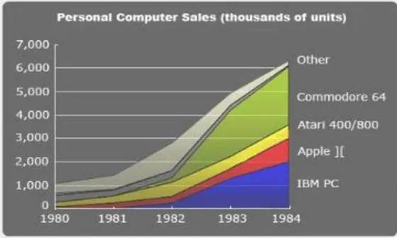
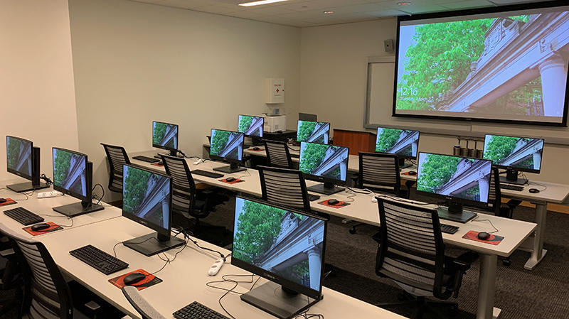

Computers changed the world. Today computers are everywhere from your pocket to your car. Iconic computers such as the IBM PC, Apple II, and Commodore 64 took computers from being an office appliance to turning them into a necessity of every home. The intake of home computers not only gave a surge in creativity but gave a new entirety of business and jobs and a new type of people. Home computers introduced millions to programming, gaming, and online communication, fostering a generation of tech enthusiasts and entrepreneurs.
 The 80s home computer revolution was more than a technological milestone; it was a cultural phenomenon that reshaped the way people perceived and engaged with the burgeoning world of personal computing, leaving an indelible mark on the trajectory of technological innovation. Today people can get any piece of info wherever, whenever and science has taken a massive leep with the introduction of small form-factor computers. Home computers not only changed the life of the people when they first came out but they sent a ripple that would affect the world forever.